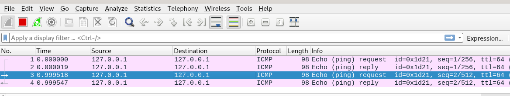

Index
lightweight.ens33.cap
we're trying to find the traffic in which the server creates new accounts for new users in ldap and see exactly what's going on therewireshark starts empty at first but refreshing user.php..

but pinging the localhost on the box


shows packets getting captured! Next step is to see what refreshing the other webpages do